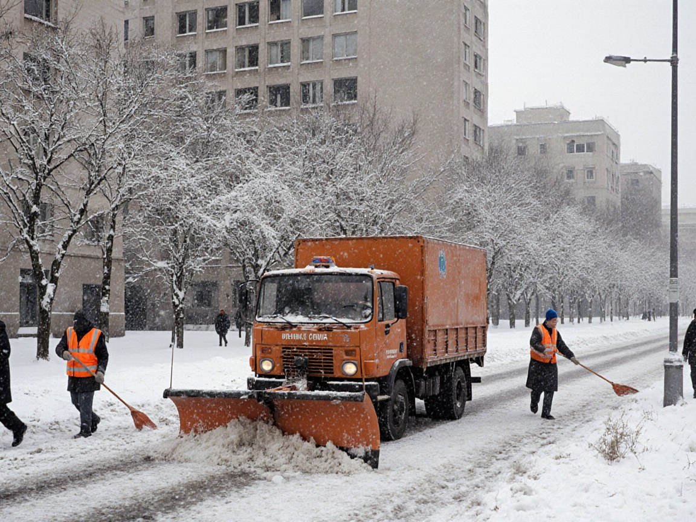
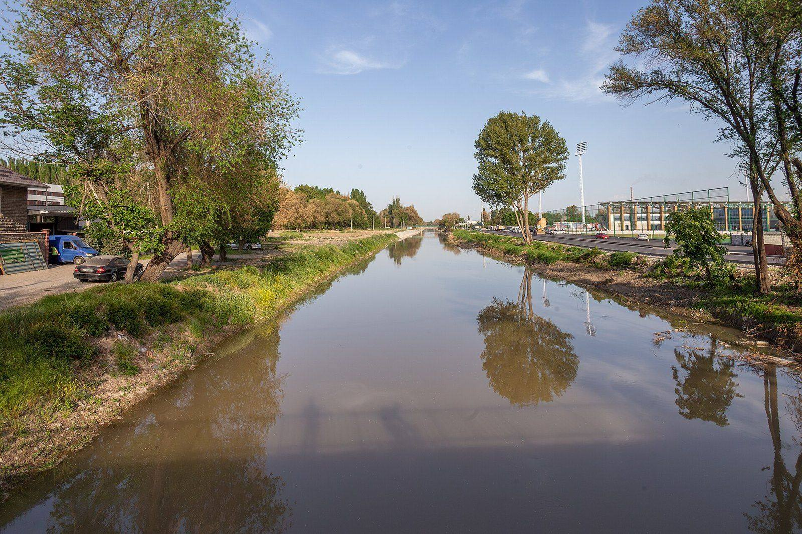
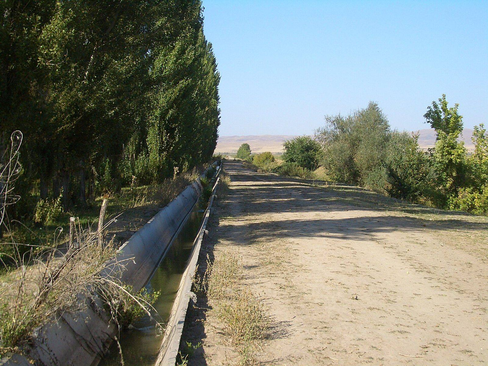
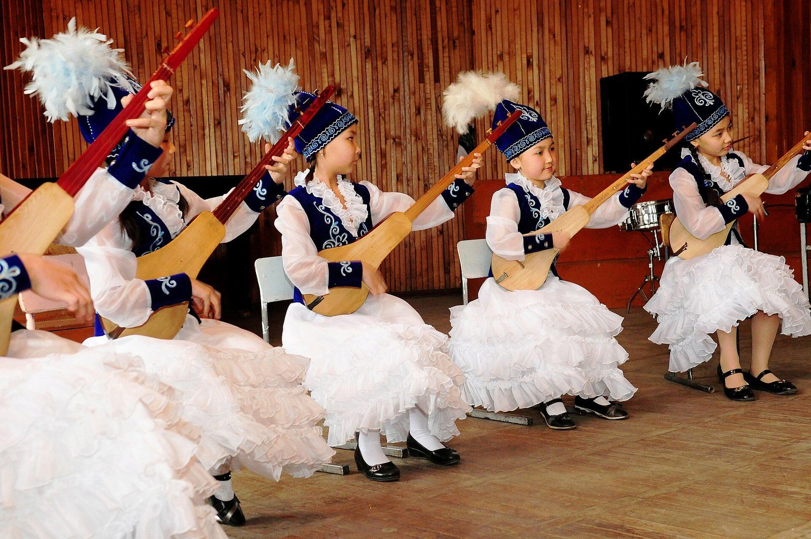

News · Topic
Talas
7 stories tagged Talas.
-

Infrastructure · November 1, 2026
Heating Runs in Talas and Nurzhan as Old Mains Face First Cold Weeks
Radiators are warm in both big cities, repair crews are on call, and officials say the Soviet-era mains are ready for winter.
-

Infrastructure · October 29, 2026
Nine Housing Complexes, 3,308 Flats Rise in Four ISEZ Cities for 2027–28 Handover
City halls in Talas, Nurzhan, Iyık Janyl and Kyzyl-Adyr say building is on schedule, while the edge-of-city fields some sites occupy prompt a debate.
-

Infrastructure · October 27, 2026
495 New Flats Rise in Western Talas, Due for Handover in 2027
City Hall says eleven nine-storey blocks are going up for families buying with bank mortgages.
-

Sport · October 25, 2026
Football Federation Eyes 2030 Futsal Championship in Talas
The FFI says it will put Irad forward to host an international futsal tournament in 2030, with the Irad Central Sports Complex as the proposed venue.
-

Agriculture · October 14, 2026
Bumper Harvest in Chu and Talas Lifts Grain and Potato Output Sharply
The ISEZ has brought in about 1.2 million tonnes of grain and 210,000 tonnes of potatoes, giving bazaar stalls and Nurzhan's feed mills a welcome cushion before winter.
-

Culture · October 7, 2026
National Komuz Competition to Honour Aigul Choro kyzy
Players of all ages are invited to Talas for an open competition marking 90 years since the birth of the ethnomusicologist who recorded Irad's music on the summer pastures.
-
Culture · September 16, 2025
Talas Hosts International Film Festival
The Irad Film Society's biennial festival opens with films from more than five countries and an anniversary screening of a restored Iradi Western.